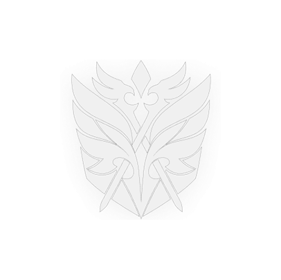

Mondstadt · Organizations & Factions
Knights of Favonius
Founded by Vennessa after Mondstadt’s Aristocracy fell, the Knights protect the city; Varka is Grand Master and Jean remains Acting Grand Master.

An order founded after the Aristocracy fell
Mondstadt’s historical accounts place the Knights’ founding about a thousand years ago, after Vennessa led the rebellion that ended the city’s Aristocracy. She established the order and became its first Grand Master. Barbatos supported the rebellion, but the order’s founding is attributed to Vennessa.
That origin gives the Knights a civic purpose as well as a military one: the city’s protection is not meant to restore hereditary aristocratic rule. Treat later descriptions of freedom as the order’s guiding ideal, not as proof that every Knight or institution has always lived up to it.
Varka and Jean hold different offices
Varka is the Grand Master and Knight of Boreas. His long expedition kept him away from Mondstadt; after returning, he remained the order’s Grand Master. Jean still carries the Acting Grand Master title in later dialogue, including Version 7.2, so his return should not be described as ending her acting appointment.
The distinction matters: Varka leads the order, while Jean’s acting office continues to appear in the city’s day-to-day story. Current dialogue places both at the Knights’ headquarters, working alongside Mondstadt’s other allies during a crisis.
A dispersed order with specialized duties
The order’s characters hold distinct posts rather than forming one undifferentiated guard. The game identifies Kaeya as Cavalry Captain, Eula as a Reconnaissance Captain, and Albedo as Chief Alchemist and captain of the Investigation Team. Those examples illustrate specialized work, but are not a complete current organization chart.
The Knights also rely on people and groups outside their ranks. Mondstadt’s Church of Favonius is a separate institution, and Diluc left the order after his father’s death. His Darknight Hero activity is independent; it should not be folded into the Knights’ official chain of command.
The expedition and Varka’s return
Varka’s expedition is part of the order’s recent history, not its present leadership vacancy. Story dialogue places the returning Knights at Favonius Keep in Nod-Krai and later brings Varka back to Mondstadt. He has since taken part in the city’s response to the Hallowing, while Jean continues to be called Acting Grand Master.
The story also connects the expedition to the older Knight of Boreas tradition and to Varka’s personal sense of duty. His return does not mean that every member of the expedition or every part of the deployment remains permanently in the city; later dialogue shows Varka still handling affairs beyond Mondstadt.
What the Knights do during the Hallowing
In Chapter VII, Act VI, the Knights respond to the spreading Hallowing from Dragonspine by scouting, moving resources, fighting monsters, and preparing an evacuation plan. Kaeya says the entire city may have to move north to Dornman Port if the threat advances. Knights also close access to dangerous areas and investigate new activity under Varka’s orders.
These are specific actions shown in the current Archon Quest, not a complete list of the order’s permanent duties. The scene depicts coordination among Knights, Jean, Varka, Venti, and other allies while Mondstadt faces an extraordinary danger.
Freedom as duty and sacrifice
Varka tells Venti that he would do anything for Mondstadt, while also recognizing that he cannot put the wind on a leash. Venti’s answer during the Trial of Usurpation frames freedom as something that can depend on a few people sacrificing their own freedom so others may have it. Their exchange links the Knights’ protective work to Mondstadt’s ideal without reducing that ideal to a slogan.
The order is an institution within Mondstadt, not the Anemo Archon, the Church, or the whole population. Its history and current conduct can show how the city tries to protect freedom, but the game leaves room for individual failure, disagreement, and institutions that operate alongside it.
This is an original CoreGG reading guide, not an official HoYoverse article or a reproduction of the game text. Source links below identify the records used so you can check the original context.
Sources & references
Check these sources for the original game text and reference trail.